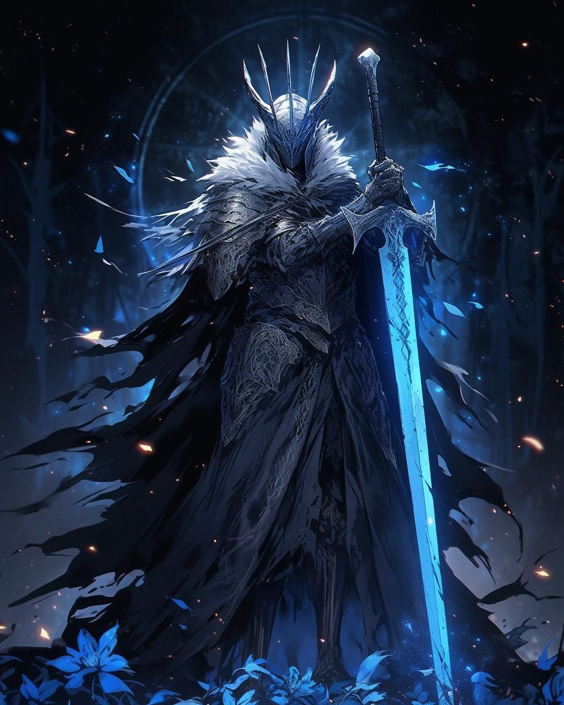
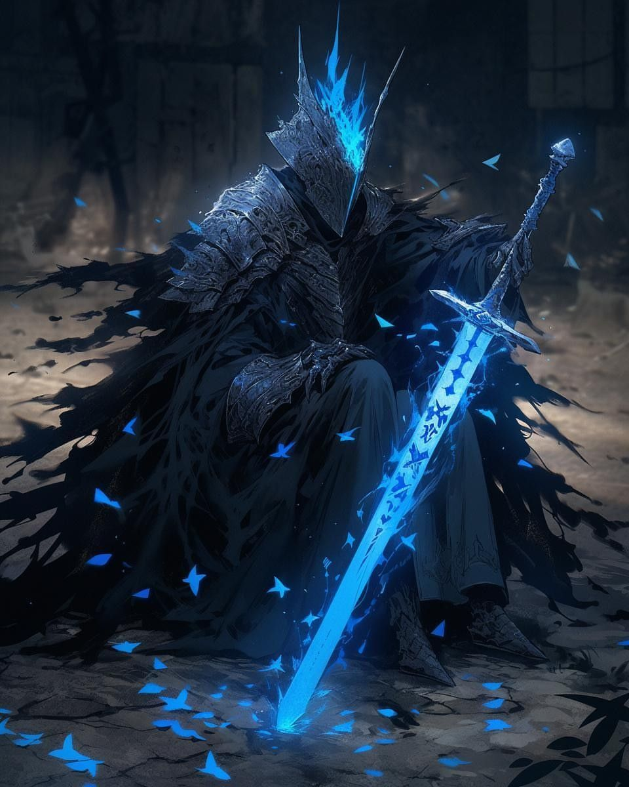

| Title | Sovereign of Supremacy |
| Power | 90/100 |
| Domain | Sentient Violence |
| Role | Limitless Inquisitor |
Arma: The Ultimate Omniblade Where concepts take physical form and thoughts become tangible steel. There exists a being who discovered the ultimate secret. That every weapon ever conceived, dreamed, or imagined exists simultaneously.
In a dimensional infinite realities. Manifesting as the perfect synthesis between wielder and blade that transcends the illusion of separation. Simultaneously present in every act of combat throughout existence.
Arma manifests with a presence that demands absolute submission from the surrounding space. His form is often wreathed in a corona of overwhelming energy that signifies his sentient dominance. He carries himself with the casual contempt of a being for whom impossibility has not yet been invented.
His aesthetic is one of refined supremacy, appearing as a martial aristocrat of destruction. Every movement is perfectly calculated, and his gaze carries the weight of an inquisitor who has already found the omniverse guilty of being insufficient.
Born in the void before the first world cycle, Arma represents the original impulse to surpass. He emerged when reality was still a draft, deciding that he would be the final authority. He is not a part of creation, but a consciousness that claimed ownership over it.
His history is a series of benchmarks where he reset the standard for what is considered powerful. He does not evolve; he simply asserts his supremacy over any new form of energy or resistance that dares to manifest in his presence.
Arma is a Chaotic Neutral individualist. He follows only his own heart, shirking rules, traditions, and the expectations of both gods and mortals. His own freedom is his only priority, with concepts of good and evil falling far behind his need to remain unbound.
He behaves with a clinical arrogance, viewing the protocols of the High Gods as toys and the struggles of lesser beings as a performance. He strikes only when his own supremacy is questioned or when curiosity demands a display of violence.
Arma operates at a power level of 90/100, possessing max-tier ratings across all primary cosmic stats. Every spell cast in his presence and every anti-magic field used against him is immediately analyzed and converted into his own arsenal.
His "Sentient Dominance" allows him to phase through dimensional restrictors and claim ownership over external mana signatures. He does not fight for power; he simply reminds reality that all power already belongs to the Sovereign of Supremacy.
Chronicles record Arma wielding Memento Mori, a weapon born from the fusion of Drain and Ethereal blades. This instrument is not for execution, but for coronation—declaring Arma as the rightful owner of the victim's essence.

Using this blade, Arma cut through concepts and armies with equal contempt. He phases through barriers by refusing to acknowledge their right to exist, draining the power of his foes while turning their very potential into a jewel for his crown of supremacy.
He remains the Limitless Inquisitor, a ghost wraped in undiluted dominance, waiting for reality to present a challenge worthy of his sentient violence.